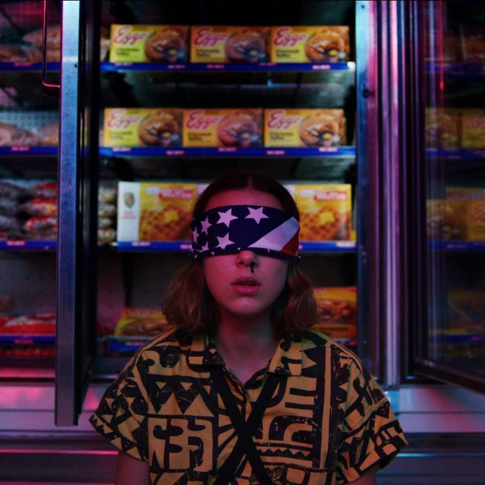
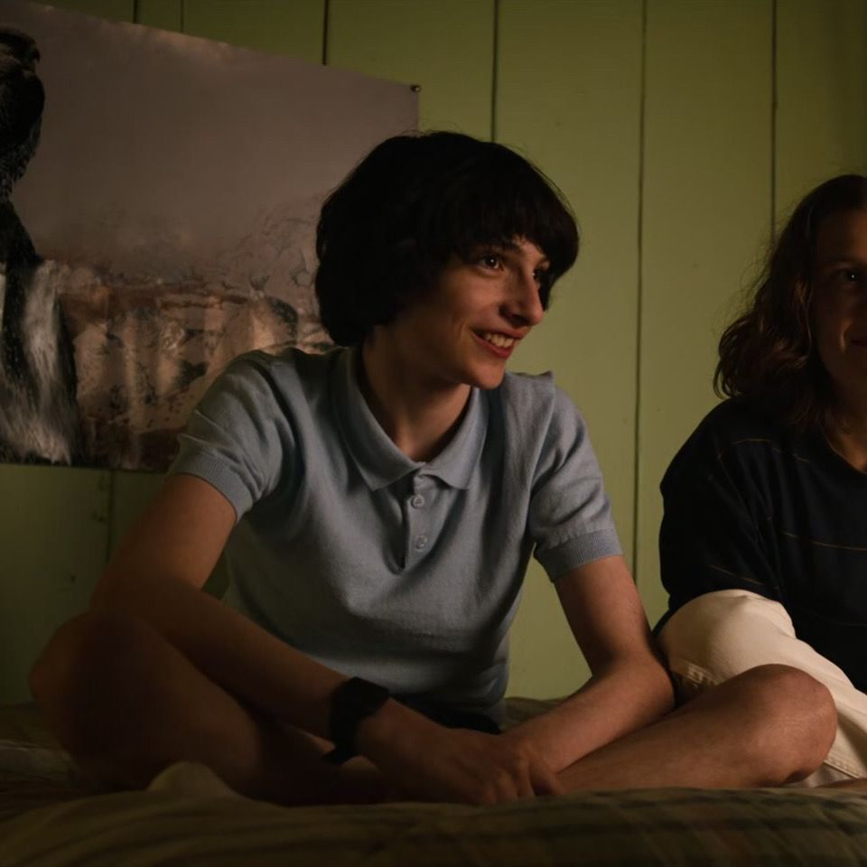
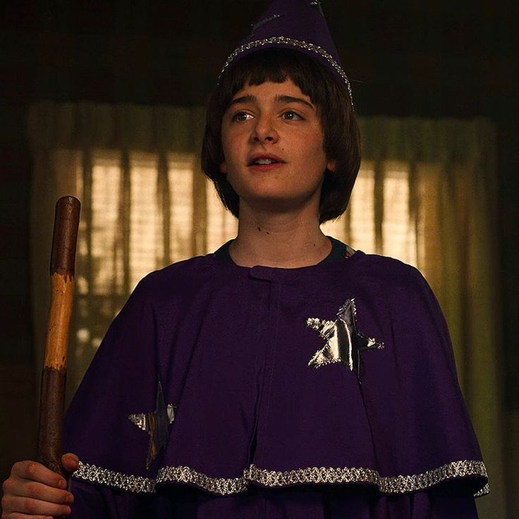
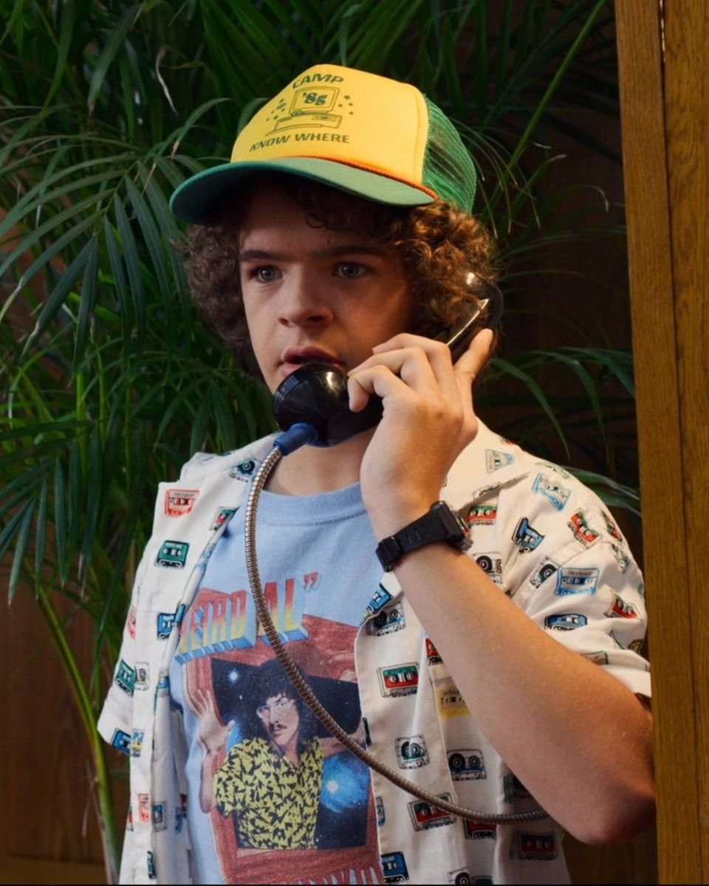
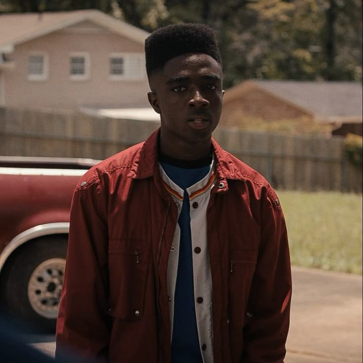
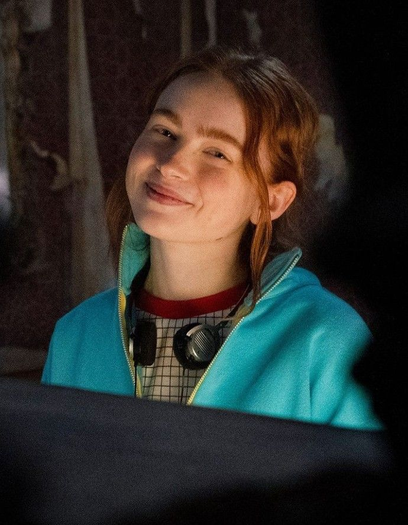

Serie sobrenatural, con drama, ciencia ficción e incluso un poco de terror.
Sinopsis
La historia inicia en la ciudad de Hawkins, Indiana. Will Byers, de 12 años de edad, tras pasar el día jugando con sus amigos a Calabozos y Dragones desaparece misteriosamente al regresar a casa. Su madre, Joyce, desesperada, comienza la búsqueda de Will, mientras el jefe de policía Hopper comienza a investigar por su cuenta. Poco después de la desaparición de Will, una misteriosa niña con extrañas habilidades aparece en una cafetería de la localidad. Pero en el desarrollo de la investigación descubrirán que no solo tendrán que enfrentarse a una misteriosa organización del gobierno, sino que tambien a fuerzas siniestras que planean devorarlos a todos.
Upside Down
El "Upside Down" es una dimensión paralela y oscura que es una copia casi idéntica del mundo humano, pero invadida por una atmósfera tóxica, esporas y entidades demoníacas como el Demogorgon y el Mind Flayer. Esta dimensión funciona como el origen de las fuerzas sobrenaturales y los monstruos que amenazan a Hawkins y es gobernada por Vecna, también conocido como Henry Creel. Se formó a partir del experimento de Eleven que abrió la puerta entre las dimensiones, con el Upside Down siendo un reflejo de Hawkins congelado en el tiempo.
Personajes principales

Eleven

Mike Wheeler

Will Byers

Dustin Henderson

Lucas Sinclair

Max Mayfield
Vecna
Temporadas
Temporada
Resumen
Año
Rating Popular
Temporada 1
Un niño desaparece en Hawkins y aparece una misteriosa niña con poderes sobrenaturales.
2016
8.7/10
Temporada 2
El pueblo enfrenta las secuelas de la primera temporada y surge una nueva amenaza desde el Mundo del Revés.
2017
8.8/10
Temporada 3
El grupo enfrenta a un nuevo enemigo, el Mind Flayer, mientras Hawkins disfruta de un verano lleno de cambios.
2019
8.6/10
Temporada 4
Los amigos están separados en distintos estados, enfrentando los aterradores poderes de Vecna y secretos oscuros del pasado.
2022
8.9/10
Música representativa
Acá hay una playlist con las canciones que me recuerdan a Stranger Things o que simplemente aparecen en la serie. Recomiendo que la pongan de fondo mientras realizan alguna actividad, y así, poder hacer crecer sus gustos musicales con nuevas canciones.
Opinión Personal
Esta serie la comencé a ver desde pequeña, y por esa misma razón es que significa mucho para mí. Claro es una muy buena serie, pero lo hace aún más impresionante el hecho de crecer con los actores a medida pasa cada temporada. De cierta manera creo que es como un bond emocional.
A mí me cuesta mucho ver series, entonces siendo totalmente honesta si la dejé de ver un tiempo mientras vivía mi último año de bachillerato, por lo que me había atrasado. Sin embargo, en las últimas vacaciones de ciclo me pude poner al día con la serie y emocionarme porque dentro de poco sale la última temporada. Pero ya sin darle tanta vuelta, a esta serie le daría un rating de 9.5/10. Stranger Things contiene mucha emoción, acción e incluso muestra lo que es crecer con tus amigos de la infancia. Al verla me tiene sentada a la orilla del sillón nerviosa por lo que sucederá a continuación. Es algo de lo que no recomendaría perderse. Haz espacio en la agenda (un tiempo libre) y dale una oportunidad, la vida profesional puede esperar un ratito.